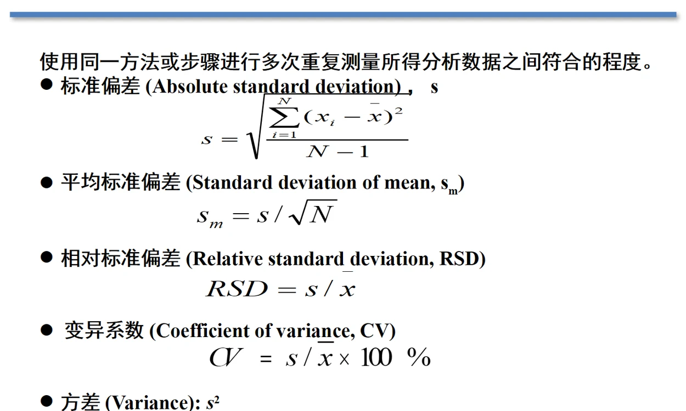
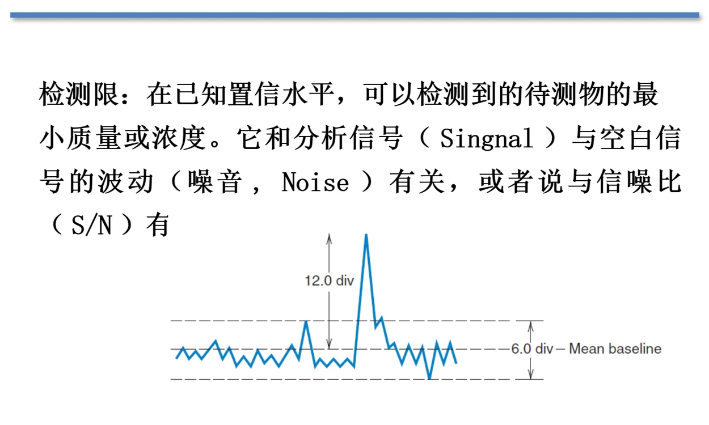
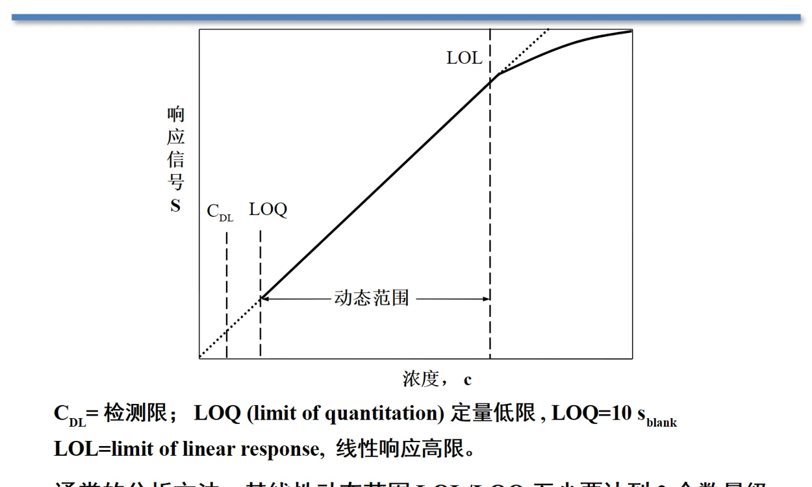
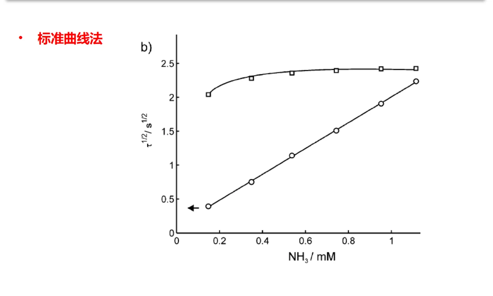
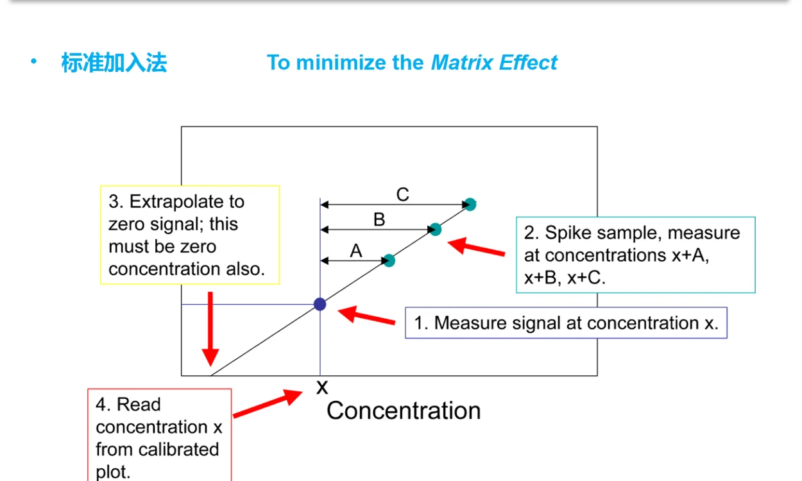
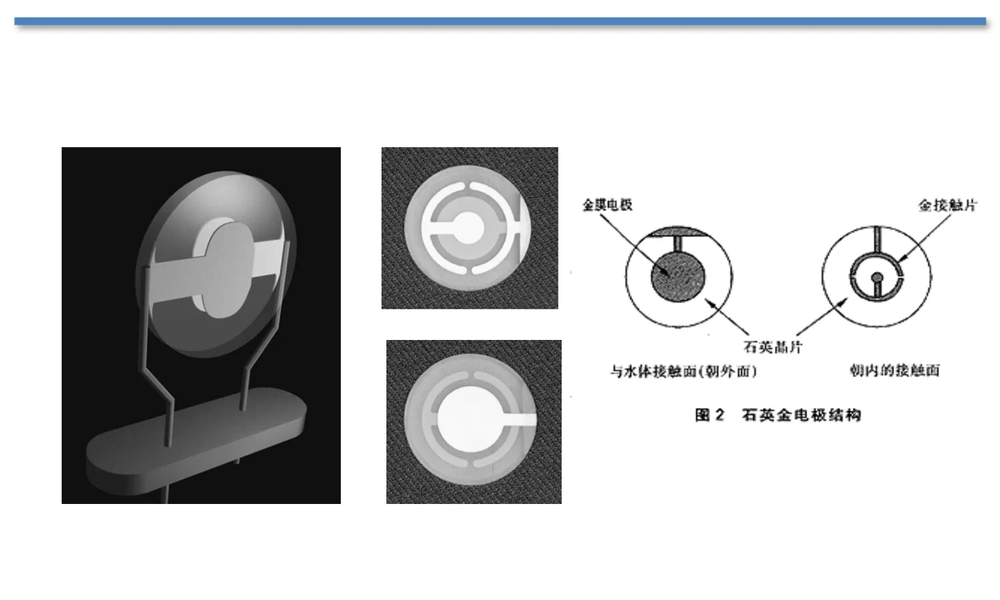
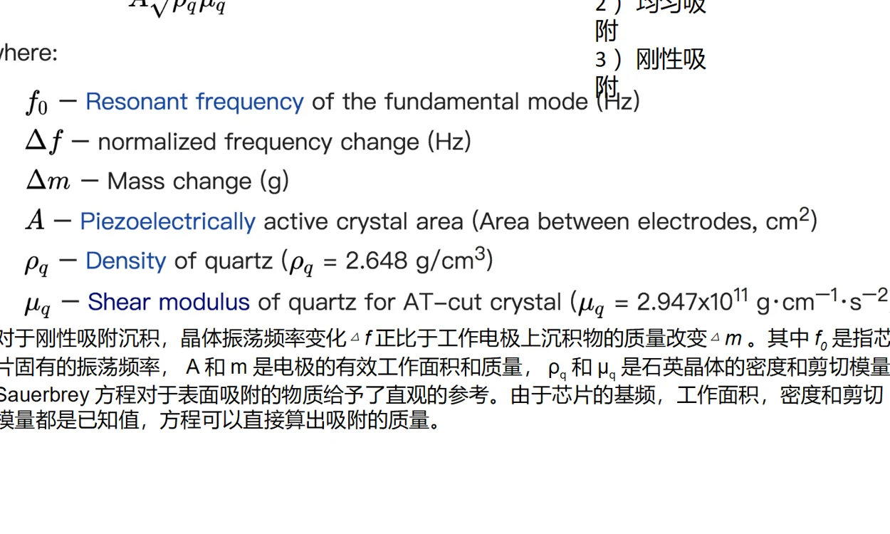
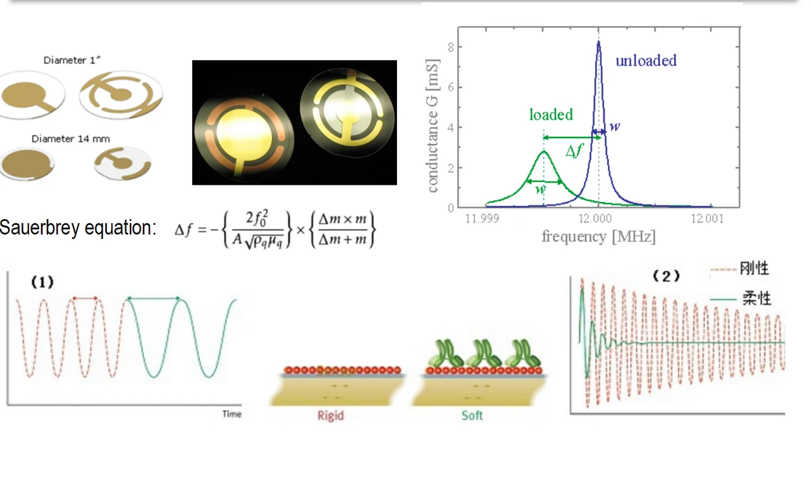

09 · INSTRUMENTAL ANALYSIS & QCM
仪器分析基础、校准与石英晶体微天平
依课件顺序整理知识体系、公式条件、计算例题和易混概念。
9.1 · COURSE NOTES
分析方法、信号与测量链
本章依据57页课件，从仪器性能走到校准，再用石英晶体微天平（QCM）说明如何把物理信号转换成化学信息。化学分析以反应与计量关系为核心；仪器分析测量光、电、质荷比、频率等物理或物理化学性质。样品处理、分离、掩蔽与富集仍然决定最终结果的可靠性。
| 方法 | 所测信息 | 典型问题 |
|---|---|---|
| 光学分析 | 吸收、发射、散射等 | 选择波长并识别光谱干扰 |
| 电化学分析 | 电位、电流、电荷、电导 | 明确测量活度还是总浓度 |
| 色谱与电泳 | 两相分配或迁移速度差异 | 先分离，再用检测器定量 |
| QCM | 谐振频率及耗散变化 | 质量负载、液体耦合与黏弹性 |
测量链：样品制备 → 化学或物理响应 → 换能器 → 信号处理 → 校准与结果。高灵敏度不自动保证高准确度，仪器分析也没有统一的“5%误差”；课件中的数字是概括性比较，实际应看方法验证。
来源：9_Instrumental analysis & QCM.pptx，第1–56页；正文注明校订与推导条件。
9.2 · COURSE NOTES
精密度、偏倚与准确度
精密度（precision）描述重复结果彼此接近的程度。偏倚（bias）是均值相对参考值的系统性差异。重复性很好仍可能存在偏倚；与有证参考物质比较、做加标回收和空白试验，可以定位不同来源的误差。
s与原测量值同单位；均值标准差sx̄只有在独立、同分布的随机误差模型下按√N减小。增加重复次数不能自动消除系统偏倚。均值接近零时RSD不稳定，应报告绝对标准差。

来源：9_Instrumental analysis & QCM.pptx，第1–56页；正文注明校订与推导条件。
9.3 · COURSE NOTES
校准灵敏度与分析灵敏度
线性校准模型写为y=b+mc。斜率m表示单位浓度改变引起的信号变化，称校准灵敏度；其单位是信号单位乘浓度单位的倒数。分析灵敏度还把信号的随机波动纳入比较，常用γ=msy。
只比较两条曲线的斜率可能失真：斜率更大的仪器若噪声也更大，检出能力未必更好。例：m=20、sy=0.40时γ=50；m=10、sy=0.10时γ=100，后者能更好地区分小浓度差。
来源：9_Instrumental analysis & QCM.pptx，第1–56页；正文注明校订与推导条件。
9.4 · COURSE NOTES
检出限、定量限与线性范围
先在空白信号尺度确定阈值，再借校准斜率转换到浓度。简化模型取yDL=ȳblank+3sblank；若扣除空白后截距为零且m为正，则：
3和10是本课采用的常用约定，并非所有方法都能由一次空白测量确定实际检出限。课件“LOQ=10sblank”仍在信号尺度，写成浓度必须除以m。线性范围的低端通常从LOQ起，高端为LOL；动态可用范围与严格线性范围要按校准模型区分。
cDL=0.060 mg·L−1， cLOQ=0.200 mg·L−1


来源：9_Instrumental analysis & QCM.pptx，第1–56页；正文注明校订与推导条件。
9.5 · COURSE NOTES
噪声、信噪比与改善方法
| 噪声类型 | 来源 | 控制思路 |
|---|---|---|
| 化学噪声 | 温度、湿度、基体和颗粒不均匀 | 控制条件与样品代表性 |
| 热噪声 | 热运动引起电荷波动 | 降温、降低电阻或带宽 |
| 散粒噪声 | 电荷离散通过界面 | 优化检测通量与带宽 |
| 闪变噪声 | 低频噪声，常见功率谱随频率倒数增加 | 调制到较高频段，选用低噪元件 |
| 环境噪声 | 电源和电磁耦合 | 接地、屏蔽、差分测量 |
平均带来的√N增益要求信号稳定且噪声独立、近似零均值。漂移、相关噪声和系统偏差不能用这一公式抹掉。缩小带宽可降低部分噪声，但会延长响应时间。选择性描述在基体共存组分下识别待测物的能力，和灵敏度属于不同维度。
来源：9_Instrumental analysis & QCM.pptx，第1–56页；正文注明校订与推导条件。
9.6 · COURSE NOTES
外标、标准加入与内标
| 方法 | 计算与依据 | 限制 |
|---|---|---|
| 外标 | 用独立标准系列拟合y=b+mc，再由样品信号反算浓度 | 样品和标准的基体响应需匹配 |
| 标准加入 | 向同一样品的等份试液中加已知待测物，定容后拟合 | 校正乘性基体效应，不能自动校正加性背景 |
| 内标 | 加入固定已知量内标，利用待测物与内标的响应比 | 内标应和待测物有相似处理/检测行为，且能区分 |
标准加入若各管取V₀样品并定容至同一Vf，横坐标取最终加入浓度cadd，扣除空白后的纵轴为y，则y=m(cₓV₀Vf+cadd)。负横截距等于−cₓV₀Vf，必须还原稀释倍数。
例：5.00 mL样品统一定容至10.00 mL，负横截距为−0.40 mg·L−1，原样品浓度为0.80 mg·L−1。课件的NMR/TMS例主要用于化学位移参考；定量内标还需已知加入量与可用响应比。


来源：9_Instrumental analysis & QCM.pptx，第1–56页；正文注明校订与推导条件。
9.7 · COURSE NOTES
QCM的压电响应与Sauerbrey方程
石英晶体的压电效应使机械振荡与电信号互相耦合。电极表面增加薄的刚性质量负载，谐振频率降低。QCM把频率差转换为质量变化，QCM-D还记录耗散，用于判断层的黏弹性质。
f₀是基频，A为有效面积，ρq为石英密度，μq为剪切模量。此处Δf取基频变化；泛音数据先按所用仪器约定归一化。Cf必须与频率和质量面密度单位配套。负号表示增重降频，不能把负频移解释为负质量。


来源：9_Instrumental analysis & QCM.pptx，第1–56页；正文注明校订与推导条件。
9.8 · COURSE NOTES
刚性薄膜条件、耗散与计算
Sauerbrey关系适用于少量、均匀、刚性且与晶体紧密耦合的吸附层。软膜、黏弹层、液体黏度/密度改变、溶胀和非均匀覆盖都可能使频移不再只代表干质量。表面附着层携带的水也可能成为声学耦合质量的一部分。
例题给定Cf=56.6 Hz·μg−1·cm²、A=0.200 cm²、Δf=−28.3 Hz，则Δm=0.100 μg。该系数是例题指定的校准参数，不能脱离晶体基频与单位通用套用。

课件后半段以生物分子、核酸/酶相关研究展示表面过程监测。对案例先识别识别层、结合或反应过程、频移方向和耗散变化，再解释响应；“无需标记”不代表没有非特异性吸附。
来源：9_Instrumental analysis & QCM.pptx，第1–56页；正文注明校订与推导条件。
9.9 · COURSE NOTES
复习、校订与自测
复习顺序：确定被测量 → 选择适合基体的校准 → 区分斜率、噪声与偏倚 → 检查检出/定量范围 → 对QCM再核对薄膜条件与液体影响。
课件校订：precision统一译为精密度；bias是偏倚而不是准确度本身；质谱依据质荷比；不能把所有仪器分析的误差写成固定5%；QCM课件的1 pg是特定性能示例，不是全部实验的保证。
来源：9_Instrumental analysis & QCM.pptx，第1–56页；正文注明校订与推导条件。